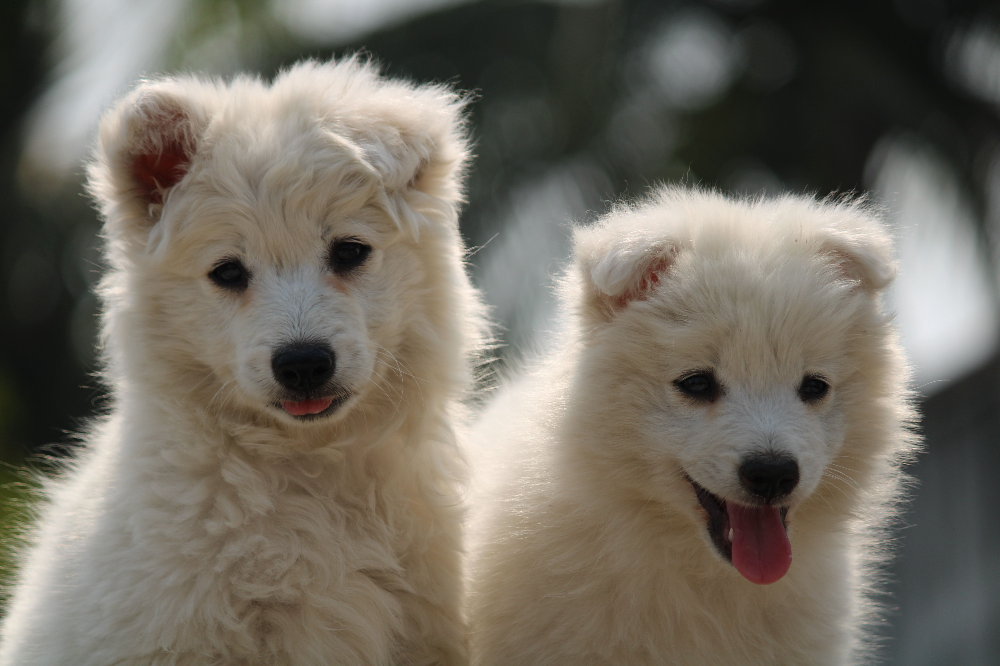
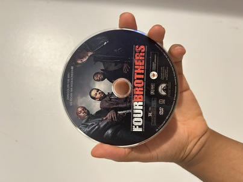

Original Image
Click to open the image in its original JPG format: puppies-outdoors-arijit-dey.jpg
This page demonstrates how images behave across different formats, sizes, and proportions on the web. It explores the difference between a large, high-quality source photo and a personal photo taken on a phone, showing how each can be converted to different formats (JPG, GIF, greyscale, and black and white), properly resized for the web, improperly stretched or squished, and improperly enlarged from a too-small source. The goal is to understand how image size and proportion choices affect load times, visual quality, and overall site performance.
I chose this photo because the warm, sunlit grass and the fine detail in the puppies' fur made it a great candidate for testing how different formats and sizes affect image quality. The photo was taken by photographer Arijit Dey on Pexels, who has a number of other animal and outdoor lifestyle photos in his portfolio. The original image is a JPG, 6000 x 4000 pixels, and approximately 7.2 MB in size.
Click to open the image in its original JPG format: puppies-outdoors-arijit-dey.jpg
Click to open the image in GIF format: puppies-outdoors-arijit-dey.gif
Notice the loss of subtle color detail in the puppies' fur due to GIF's limited 256-color palette.
Click to open the image in greyscale: puppies-outdoors-arijit-dey-greyscale.jpg
Click to open the image in pure black and white: puppies-outdoors-arijit-dey-black-white.jpg
This version was created using GIMP's Threshold tool, producing only pure black and white pixels.

The following four images all started from the properly resized 600x400 image, but have been stretched or squished to incorrect proportions:
For my personal geometry photo, I chose a DVD I held for scale and proportion comparison. The photo was taken on my phone and shows my hand holding the DVD. The original image is a JPG, 3024 x 4032 pixels, and approximately 4.8 MB in size.
Click to open the image in its original JPG format: dvd-in-hand.jpg
Click to open the image in GIF format: dvd-in-hand.gif
Notice the reduced color palette compared to the original JPG.
Click to open the image in greyscale: dvd-in-hand-greyscale.jpg
Click to open the image in pure black and white: dvd-in-hand-black-white.jpg
This version was created using GIMP's Threshold tool.


The following four images all started from the properly resized 302x403 image, but have been stretched or squished to incorrect proportions:
